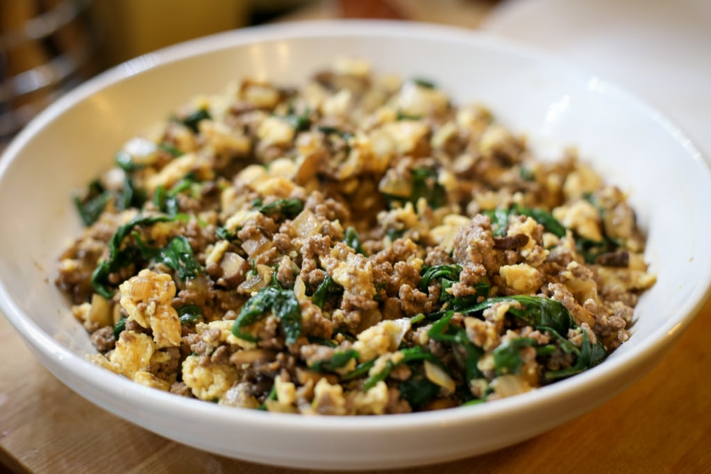

Joe's Special

Description
A recipe inspired by San Francisco's Joe's restraunt
Ingredients
- Spinach (2 bags)
- Ground Beef (2 lbs)
- Eggs (2)
- Ricotta Cheese
- Mushrooms
- Parmasean Cheese (1 cup)
- Onion
Steps
- Brown ground beef.
- Add onions
- Add Spinach,Mushrooms, Parmesean, and 2 eggs
- stir and heat